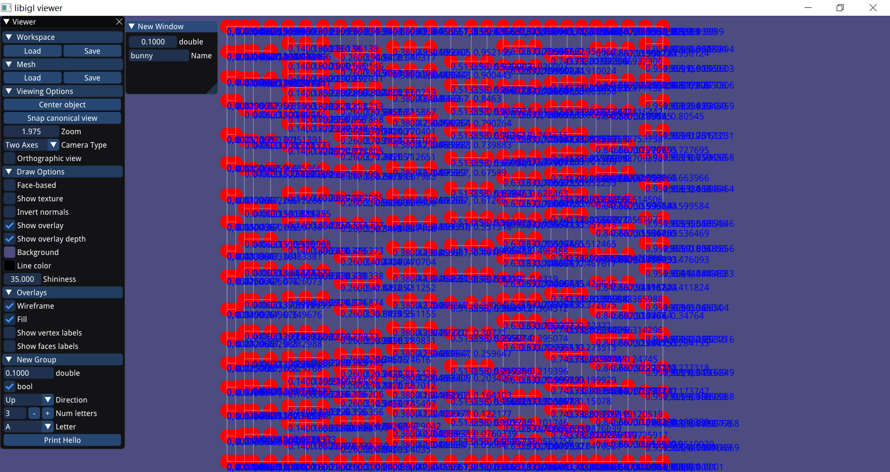
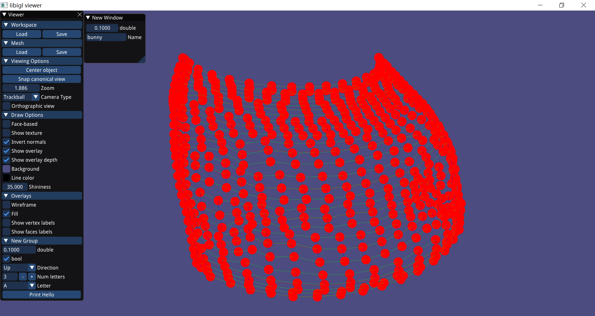
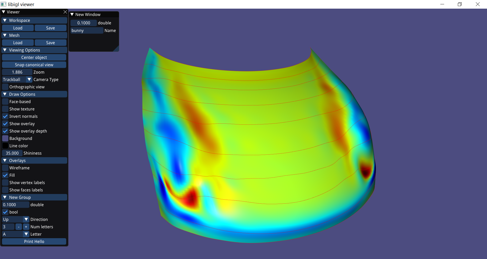

Tspline数据结构及常用API
相关文件：
- array.hpp:
- node.hpp:
- mesh.hpp:
- utility.h
- utility.cpp
其中Array,Node为T样条的辅助数据结构。
设T样条曲面一个节点处的节点向量为， 则曲面的方程为：
为了表示T样条，需要表示T样条的T网格，关键是表示每个T节点和T节点之间的连接关系，为此，本软件使用Node和Mesh两个数据结构，能够很方便的表示T样条。
Node
template<class T>
class Node{
friend class Mesh<T>;
public:
Node(int num=0):order(num),data(),s(),t(),adj(),valid(true){}
~Node();
public:
int order; // the order of node: 1,2,3,...
T data; // point coordinate
Array<double,5> s; // knot vector of s-direction
Array<double,5> t; // knot vector of s-direction
Array<Node<T>*,4> adj; // pointer of lower, right,upper,left node
bool valid;
};
Node类用于表示T节点，包含了每个节点的标号、控制点坐标、方向的节点向量和相邻的下、右、上、左方向的节点。
Mesh
class Mesh{
private:
Mesh& operator=(const Mesh&){}
public:
Mesh():width(1.0),height(1.0),id(-1){}
Mesh(const Mesh& other);// deep copy
~Mesh();
public:
// organizing node in a good data structure
map<double, map<double, Node<T>*> > s_map; // s_map[s][t]
map<double, map<double, Node<T>*> > t_map; // t_map[t][s]
vector<Node<T>*> nodes;
int id;
private:
// 边界参数值
double width;
double height;
// 离散得到的三角网格
Eigen::MatrixXd mesh_V;
Eigen::MatrixXi mesh_F;
Viewer* viewer;
vector<map<double, double>> s_cache; // 缓存每个节点计算过的s方向基函数值
vector<map<double, double>> t_cache; // 缓存每个节点计算过的t方向基函数值
};
Mesh通过vector<Node<T>*> nodes顺序存储了所有的T节点，
又通过s_map,t_map的特殊结构组织了T样条的所有节点，能够很方便由s,t参数值获得相应的节点。
Tspline文件格式
以下几个函数用于读取和保存Tspline，以及将T样条曲面离散保存为三角网格、四边网格。
// load
int loadMesh(string);
// save
int saveMesh(string);
// 按resolution间隔划分参数域，将曲面离散为三角网格并保存为OBJ格式
void saveAsObj(string, double resolution=0.01);
// 按resolution间隔划分参数域，将曲面离散为四边网格并保存为OBJ格式
void saveAsQuadObj(string, double resolution = 0.01);
T样条详细的文件格式见loadMesh,saveMesh的具体实现，具体例子见out/tspline目录下的文件。
T样条显示
显示相关函数如下：
void drawTmesh();

void drawControlpolygon();

void drawSurface(double resolution = 0.01);

void draw(bool tmesh, bool polygon, bool surface,double resolution = 0.01);
调用draw函数可以通过tmesh,polygon,surface3个布尔变量控制显示T-preimage,T样条控制网格，T样条曲面。在本软件中，这些切换可以通过键盘操作，详情见下一节。